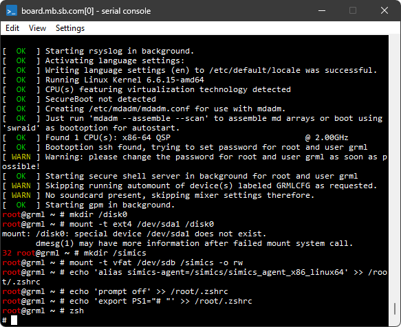
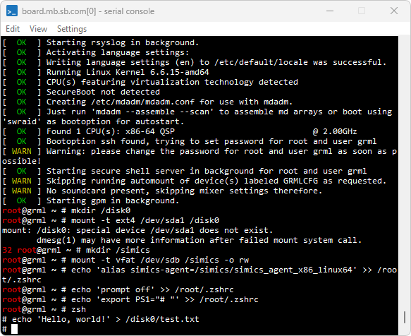
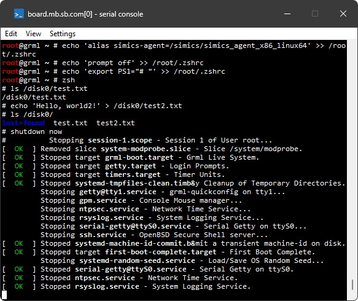
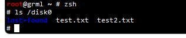

This section gives some information about virtual storage devices. Particularly, a few strategies are described for preserving changes done during a simulation session to virtual hard disks and using these changes in other simulation sessions.
Target machines usually have emulated storage devices attached. A typical example of such storage device is a virtual hard disk.
The software running on the target machines reads data from and writes data to virtual hard disks. The actual data is stored in dedicated files on the host system. Such files are usually called image files, disk image files, or, simply, images.
The Intel Simics simulator supports a few image files formats:
- the simulators proprietary image format CRAFF (for Compressed Random-Access File Format)
- raw image files
- VHDX images files
Normally, disk image files are opened in a read-only mode. All changes the guest software does to virtual disk's contents are accumulated in memory or in temporary files and are not written directly to disk image files. This means that any changes written to virtual hard disks during a simulation session are lost once a user quits the simulator. There are a few benefits in using disk image files in a read-only mode:
- repeatability of simulation sessions: if a simulation session with a target machine is started again and again then the results during each run will be the same. This is very useful during debugging.
- possibility to run simultaneously many simulation sessions using the same disk image file. This is useful when running a batch of test jobs validating target software or device models.
- protection against accidental wiping out of the disk contents.
The main drawback, though, is that one needs to take additional steps to preserve changes done to virtual hard disks during a simulation session. Below we describe a few strategies how to preserve changes done to virtual hard disks during a simulation session and use them in other simulation sessions.
The changes done by target software to the contents of virtual hard disks can be saved for later use with the save-persistent-state command. Here is a sample session demonstrating the usage of the command:
-
launch the simulator and load the qsp-x86/firststeps target:
simics> load-target qsp-x86/firststeps
-
run the simulation until Linux is booted:
simics> run

-
create a file on the target system or do some other modification to the file system.
As an example, the screenshot below shows how to create the /disk0/test.txt file on the target system by running the command:
echo 'Hello, world!' > /disk0/test.txt

-
now, when a file was created, shutdown a target machine by running the shutdown now command on the target machine. This is needed to ensure that a target operating system writes the file on the disk instead of, e.g., caching it in RAM of the simulated machine:

-
stop simulation by executing the stop command. This step is needed because even though the target machine entered shutdown state, the simulator still continues to advance virtual time:
running> stop
simics>
-
save changes done to all virtual disks found in the target machine by running the save-persistent-state command, and as argument, specify the path on the host file system where the state is saved:
simics> save-persistent-state test_file_created.ckpt
-
quit the simulator:
simics> quit
The test_file_created.ckpt directory created in the previous section contains all modifications done to all virtual hard disks of the target machine. The modifications are stored in so-called differencing images which are often referred to as diff files in the documentation. These images only hold the differences to another images. A differencing image is useless by itself; it must always be used together with another image.
Let’s run a simulation now to see how the state saved previously can be used. Here is a sample simulation session:
-
launch the simulator and load the qsp-x86/firststeps target:
simics> load-target qsp-x86/firststeps
-
use the load-persistent-state command to load any state saved previously. We need to do this step at the very beginning, before the simulation was started, since otherwise the software running on the target will be presented with original state, not the updated one:
simics> load-persistent-state test_file_created.ckpt
-
run the simulation until Linux is booted:
simics> run
-
check that the /disk0/test.txt file created during the previous session is present:

Since the contents of disk images are saved incrementally by default, care should be taken when deleting the state saved previously with the save-persistent-state command: such saved state may be referred to by the state saved later.
To sum up, the typical usage scenario for the save-persistent-state and load-persistent-state commands is:
- start simulator and load the target
qsp-x86/firststeps
- use the
load-persistent-state command to load, if you already have it, the state saved previously with the save-persistent-state command
- start simulation to boot the machine
- do any modifications to the target machine
- shutdown the target machine
- stop simulation
- save the state of virtual disks with the
save-persistent-state command
Please note that even though the saved states are saved incrementally and thus depend on each other one needs to run the load-persistent-state command only once with the state one wants to load.
Useful information about the save-persistent-state and load-persistent-state
commands can be found in their documentation. The documentation can be obtained
from CLI by running the help command like this:
help save-persistent-state.
The approach described above may result in multiple saved incremental states which are hard to manage. The Intel Simics simulator allows dumping the contents of a whole virtual disk to a new disk image file. This file can be later used as a new disk image for the target machine.
There are several ways to dump a new disk image from a virtual disk. We will use the save-persistent-state command and its -independent-state flag.
Sample session:
-
launch the simulator and load the qsp-x86/firststeps target:
simics> load-target qsp-x86/firststeps
-
(optional) if there is any state saved previously with the save-persistent-state command you want to load, load it with the load-persistent-state command. In this session we load the test_file_created.ckpt state saved in the previous section:
simics> load-persistent-state test_file_created.ckpt
-
run the simulation until Linux is booted:
simics> run
-
create a file on the target system or do some other modification to the file system. Since we have already loaded the test_file_created.ckpt state at step 2 above, there is already a /disk0/test.txt on the target machine. As an example, let’s create an additional file called /disk0/test2.txt:
echo 'Hello, world2!' > /disk0/test2.txt

-
now, when we are done with all changes we wanted to do, shutdown a target machine by running the shutdown now command on the target machine. This is needed to ensure that target operating system writes the file on the disk instead of, e.g., caching it in RAM of the simulated machine: 
-
stop simulation by executing the stop command. This step is needed because even though the target machine entered shutdown state, the simulator still continues to advance virtual time:
running> stop
simics>
-
save disks by running the save-persistent-state command with the -independent-state flag and specifying a destination where on the host system to keep the files. This operation may take some time as disk images are quite large:
simics> save-persistent-state -independent-state my_independent_state.ickpt
-
quit the simulator:
simics> quit
The my_independent_state.ickpt directory created on step 7 above contains, among other things, disk images of all hard disks of the target machine. The -independent-state flag used with the command ensures that the disk image are not differencing images (or, in other words, diff files) but the complete images which contain the contents of the whole disk.
By inspecting the contents of the my_independent_state.ickpt directory we can find there the board.disk0.hd_image.craff file. This file is the disk image containing the data from the board.disk0 virtual disk object. The next section shows how one can start a target machine with this disk image.
Target systems often accept target parameters which can be used to specify a disk image for the target machine to use.
We will now find out which target parameter to use, and set this to the my_independent_state.ickpt/board.disk0.hd_image.craff
image.
-
launch the simulator without loading a target.
-
use the params.help command and filter out parameters that contain disk:
simics> params.help target = "qsp-x86/firststeps" substr = disk
┌───────────────────┬────┬────────────────────────┬────────────────────────┐
│Name │Type│Description │Default │
├───────────────────┼────┼────────────────────────┼────────────────────────┤
│machine:hardware: │file│Disk image file for the │^machine:software:linux:│
│storage:disk0:image│ │machine_name.disk0 │empty_image │
│ │ │virtual │ │
│ │ │disk. Files in craff │ │
│ │ │(Simics own file │ │
│ │ │format), VHDX, and raw │ │
│ │ │formats │ │
│ │ │are supported. │ │
│ │ │ │ │
├───────────────────┼────┼────────────────────────┼────────────────────────┤
│machine:hardware: │file│Disk image file for the │^machine:software:linux:│
│storage:disk1:image│ │machine_name.disk0 │auxiliary_image │
│ │ │virtual │ │
│ │ │disk. Files in craff │ │
│ │ │(Simics own file │ │
│ │ │format), VHDX, and raw │ │
│ │ │formats │ │
│ │ │are supported. │ │
│ │ │ │ │
└───────────────────┴────┴────────────────────────┴────────────────────────┘
-
we will use the machine:hardware:storage:disk0:image parameter to set our image:
simics> $img = my_independent_state.ickpt/board.disk0.hd_image.craff
simics> load-target qsp-x86/firststeps machine:hardware:storage:disk0:image = $img
-
to check that parameter was correctly assigned, use params.list:
simics> params.list substr = disk0
┌────────────────────────────────────┬────┬───────────────────────────────────────┐
│Name │Type│Value │
├────────────────────────────────────┼────┼───────────────────────────────────────┤
│firststeps:machine:hardware:storage:│file│my_independent_state.ickpt/board.disk0.│
│disk0:image │ │hd_image.craff │
└────────────────────────────────────┴────┴───────────────────────────────────────┘
-
run the simulation until Linux is booted:
simics> run
-
check that both files are present in /disk0:
